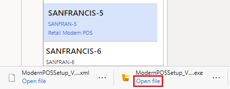

BOPIS in einer Dynamics 365 Commerce-Auswertungsumgebung konfigurieren
Important
Dynamics 365 Retail ist jetzt Dynamics 365 Commerce und bietet umfassende Handelsfunktionen für alle Kanäle – von E-Commerce über Shops bis hin zu Callcentern. Weitere Informationen zu diesen Änderungen finden Sie unter Microsoft Dynamics 365 Commerce.
In diesem Thema wird erläutert, wie Sie den Online-Kauf und die Abholung im Geschäft (BOPIS) in einer Microsoft Dynamics 365 Commerce-Auswertungsumgebung konfigurieren, nachdem sie bereitgestellt wurde.
Voraussetzung
Führen Sie die in diesem Thema beschriebenen Prozeduren erst aus, nachdem Ihre Commerce-Auswertungsumgebung bereitgestellt und konfiguriert wurde. Informationen zum Bereitstellen und Konfigurieren Ihrer Umgebung finden Sie unter Bereitstellen einer Dynamics 365 Commerce-Auswertungsumgebung und Konfigurieren einer Dynamics 365 Commerce-Auswertungsumgebung.
Nachdem Ihre Commerce-Umgebung komplett bereitgestellt und konfiguriert wurde, können Sie dieses Thema verwenden, um BOPIS-Szenarien zu aktivieren.
POS konfigurieren
Modern POS konfigurieren
Für BOPIS-Szenarien mit Kreditkartenzahlung ist eine Hardwarestation erforderlich. Die Hardwarestation ist in die Modern POS-Programme für Windows- und Android-Clients integriert. Wenn Sie Cloud POS oder Modern POS für iOS verwenden, muss der POS-Client (Point of Sale) mit einer gemeinsam genutzten Hardwarestation gekoppelt sein. In diesem Thema wird erläutert, wie Sie BOPIS für Windows- und Android-Clients konfigurieren. Weitere Informationen zur Installation einer geteilten Hardware-Station finden Sie unter Konfiguration und Installation der Retail-Hardware-Station.
- Wechseln Sie zu Retail und Commerce > Kanaleinstellungen > POS-Einstellungen > Kassen.
- Wählen Sie Kasse SANFRAN-5 und dann Bearbeiten aus.
- Ändern Sie den Wert im Feld Hardwareprofil von HW002 in HW001 und wählen dann Speichern aus.
- Um die Änderungen z synchronisieren, wechseln Sie zu Retail and Commerce > Retail and Commerce IT > Vertriebsplan.
- Wählen Sie den Vertriebsplan 1090 und wählen Sie dann im Aktionsbereich Jetzt ausführen.
- Wählen Sie Ja und dann OK, um die Datensynchronisation zu starten.
Modern POS installieren
Wechseln Sie zu Retail und Commerce > Kanaleinstellungen > POS-Einstellungen > Geräte.
Wählen Sie Gerät SANFRANCIS-5.
Wählen Sie im Aktionsbereich Herunterladen aus, und wählen Sie dann Konfigurationsdatei aus.
Wählen Sie zunächst Herunterladen und dann Retail Modern POS aus.
Nach Download der ModernPOSSetup.exe-Datei wählen Sie Datei öffnen.

Wählen Sie Weiter, um den Installationsprozess zu durchlaufen. Wenn die Installation abgeschlossen ist, wählen Sie Schließen.
Aktivieren Sie Modern POS
Wählen Sie auf dem Windows-Desktop die Option Start und geben Sie Retail Modern POS ein.
Wählen Sie die Retail Modern POS-Anwendung, um die Aktivierung zu starten.
Wählen Sie Weiter. Die Felder Server-URL, Geräte ID und Registriernummer sollten mithilfe von Informationen aus der Konfigurationsdatei voreingestellt werden, die Sie im vorherigen Verfahren heruntergeladen haben.
Wählen Sie Aktivieren aus.
Ein Authentifizierungsdialogfeld wird angezeigt. Wählen Sie das Konto aus, das die E-Mail-Adresse verwendet, die zuvor dem Mitarbeiter 000713 – Andrew Collette zugeordnet war.
Note
Wenn Sie noch keinen Mitarbeiter mit Ihrer Identität verknüpft haben, ist die Aktivierung nicht erfolgreich. Befolgen Sie in diesem Fall die Schritte im Abschnitt „Mitarbeiter Ihrer Identität zuordnen“ im Thema Konfigurieren einer Dynamics 365 Commerce-Auswertungsumgebung.
Wenn Sie aufgefordert werden, das Gerät von Ihrer Organisation verwalten zu lassen, wählen Sie Nur diese App.
Wenn die Aktivierung abgeschlossen ist, wählen Sie Erste Schritte.
Aktivieren Sie BOPIS in Modern POS
- Melden Sie sich mit 000713 als Bediener-ID und 123 als Passwort bei Modern POS an.
- Aktivieren Sie während der Wiedergabe des Einführungsvideos die beiden Kontrollkästchen in der unteren linken Ecke des Dialogfelds und schließen Sie das Dialogfeld.
- Wenn Sie nicht aufgefordert werden, die Schicht zu schließen, scrollen Sie auf der Seite Willkommen bei nach rechts, wählen Schicht schließen und melden Sie sich dann wieder am POS an.
- Wenn Sie nach dem Anmelden aufgefordert werden, wählen Sie Ausführen von Vorgängen ohne Kassenlade.
- Auf der Seite Willkommen bei scrollen Sie nach rechts und wählen den Vorgang Hardwarestation auswählen.
- Wählen Sie Verwalten, stellen Sie die Hardwarestation verwenden-Option auf Ein ein und wählen Sie OK aus.
- Melden Sie sich am POS ab und wieder an.
- Nachdem Sie angemeldet sind, wählen Sie Neue Schicht öffnen und dann Schublade aus.
Schließen Sie ein BOPIS-Szenario ab
Erstellen Sie eine Storefront-Bestellung für die Abholung im Geschäft
Gehen Sie zu der URL, die Sie im Schritt E-Commerce initialisieren während der Umgebungskonfiguration angegeben haben.
Wählen Sie ein Element aus und dann In den Einkaufskorb.
Wählen Sie auf der Einkaufskorbseite Abholung für die Bestellposition aus, die Sie gerade hinzugefügt haben.
Geben Sie im Auswählen eines Shops-Dialogfeld San Francisco ein und wählen Sie dann die Suche-Taste.
Suchen Sie in der Ergebnisliste den Shop in San Francisco und wählen Sie Hier abholen.
Wählen Sie auf der Einkaufskorbseite Als Gast auschecken aus.
Note
Um mit dem Auschecken fortzufahren, müssen Sie den Cookie-Hinweis akzeptieren. Dieser Hinweis wird als Banner oben auf der Checkout-Seite angezeigt.
Geben Sie für die Kreditkartenzahlungsmethode die folgenden Details ein:
- Name des Karteninhabers: Geben Sie einen beliebigen Namen ein.
- Kartennummer: Geben Sie 4111-1111-1111-1111 ein.
- Ablaufdatum: Geben Sie 10/20 ein.
- Kartenprüfwert (CVV)-Code: Geben Sie 737 ein.
Important
Sie sollten unter keinen Umständen versuchen, die tatsächlichen Kreditkarteninformationen auf der Testseite zu verwenden.
Fahren Sie mit der Kaufabwicklung fort, indem Sie Details zur Rechnungsadresse eingeben und dann Speichern und fortfahren auswählen.
Wenn die Bestellung aufgegeben werden kann, wählen Sie Auschecken.
Synchronisieren Sie Online-Bestellungen mit dem Backoffice
Informationen zum Synchronisieren von Online-Bestellungen finden Sie unter Onlineverkäufe und -zahlungen buchen.
Bestellung im Shop abholen
Melden Sie sich am POS an.
Auf der Seite Willkommen bei wählen Sie Auftragserfüllung aus
Wählen Sie in der Liste der Artikel zur Abholung die Position aus der Bestellung aus, die online aufgegeben wurde.
Wählen Sie Abholen, während die Bestellposition ausgewählt ist.
Der Positionsartikel wird dem Transaktionsbildschirm hinzugefügt, und $ 0,00 wird als fälliger Saldo angezeigt.
Wählen Sie den Restbetrag von $ 0,00 oder wählen Sie eine Zahlungsmethode aus, um die Transaktion abzuschließen.
Problembehandlung
Bei Online-Bestellungen, die am POS abgerufen werden, ist ein Saldo ungleich null fällig
Wenn eine Bestellung für die Abholung im Geschäft abgerufen wird und der fällige Restbetrag nicht 0 (null) beträgt, stellen Sie sicher, dass Modern POS verwendet wird und die Hardwarestation aktiv ist. Wenn Cloud POS oder Modern POS für iOS verwendet wird, stellen Sie sicher, dass eine gemeinsam genutzte Hardwarestation aktiv ist. Zum Abrufen von Online-Zahlungen ist eine aktive Hardwarestation erforderlich.
Allgemeine Probleme bei der Zahlungserfassung
Bei allen allgemeinen Problemen sollten Sie als ersten Schritt immer die Ereignisprotokolle der Modern POS- oder IIS-Hardwarestation (Internet Information Services) konsultieren. Sie finden diese Protokolle unter den folgenden Knoten im Windows-Ereignisprotokoll:
- Anwendungs- und Dienstprotokolle > Microsoft > Dynamics > Commerce-ModernPOS
- Anwendungs- und Dienstprotokolle > Microsoft > Dynamics > Commerce-Hardware Station
Zusätzliche Ressourcen
Dynamics 365 Commerce-Auswertungsumgebung – Übersicht
Bereitstellen einer Dynamics 365 Commerce-Auswertungsumgebung
Optionale Funktionen für eine Dynamics 365 Commerce-Auswertungsumgebung konfigurieren
Dynamics 365 Commerce-Auswertungsumgebung – FAQ
Microsoft Lifecycle Services (LCS)
Retail Cloud Scale Unit (RCSU)